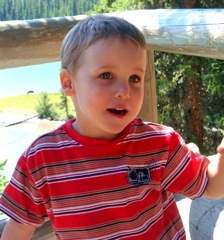
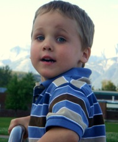
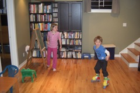
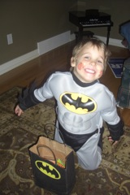

2008: Forks on the Road
This letter is also available in Portuguese.
We greeted the arrival of 2008 at the Ponta Das Canas Beach in the
Island of Santa Catarina in Brazil. Daniel re-Christened it "Daniel's
Beach." Daniel spent most of his waking hours playing at the sand and
water there. After that we went to the Xangrilá Beach in the state of
Rio Grande do Sul, which Daniel called "Vovo's Beach" because that is
where my mother (Vovo' is Grandma in Portuguese) has a house.
Soon after returning from Brazil I went to Victoria in British
Columbia where I interviewed for the position of chair of the
Department of Computer Science. The interview went well and the
department demonstrated interest, but after several weeks of pondering
a move from Edmonton to Victoria. I withdrew my name from
consideration. I then applied to the position of Department Chair in
the Department of Computing Science at the University of
Alberta. Taking such a position would imply in an important shift in
my carreer because the administrative responsibilities would leave
much less time for research. I applied to both positions after
insistence from esteemed colleagues. I aggreed to proceed with both
applications because I believe that I could do a good job in such a
position, and that I could be happy with such a shift. My department
in Alberta decided to select someone else for the chair position, and
thus suddenly I had to reactivate plans for a sabbatical that were in
very tentative form.

Fortunately my collaborators at the IBM Toronto Laboratory where
willing to work with me to set up a plan for my sabbatical on very
short notice. Thus I started my sabbatical on July 1st and started
working on a contract with IBM on July 15th. Given that I finished a
three-year appointment as graduate chair in the end of June, this was
a very nice change. Suddenly I had no more administrative
responsibilities, no teaching responsibilities, and could dedicate my
full time to research. The project with IBM is very interesting and is
allowing me a very close look at the practical aspects of applying
what I teach in graduate school to an industrial infrastructure.
In May we went to Calgary to visit with Daniel's birth family. For the
first time we had a reunion with Daniel's birthmom Belinda, his
sisters Mak and Emily, and Emily's parents Howard and Liz. In
November Emily and her family came to visit us at home in Edmonton. It
is amazing to watch how well Daniel and Emily play together.
Antonio and Wanda Braga from Minas Gerais spent a sabbatical year in
Edmonton. Daniel grew very attached to their sons Bernardo em Mateus,
which Daniel called "my boys", even though they are several years
older than Daniel. While they were in Edmonton we did several fun
things together, including going to a hockey game and to the Cirque Du
Soleil. When they left in August Daniel was sad and said "I lost my
boys." But in the Fall Daniel made new acquaintances both in "school"
and with Cecilia, the daugther of Denilson Barbosa and Bethania
(Denilson joined the Computing Science department this year). At
school Daniel's closest friends are a pair of twins, Dennis and Sinan,
who are from Germany. Daniel says that they are "my brothers." Daniel
often speaks English with a German accent.
In the first half of the year conferences and participation in thesis
defenses took me to San Francisco, Waterloo, Budapest, and Tucson.
 In August I hosted an international workshop in Edmonton and thus was
involved with all the aspects of reserving rooms, selecting menus,
hiring buses, etc. Luckily I have very good and competent help that
told me what to do. Daniel's American grandparents came to visit early
in August and we took a trip to the Jasper National Park along with
them in their motorhome. For the rest of the year Daniel talked about
the trip to Jasper with the grandparents as "my favorite holiday."
In August I hosted an international workshop in Edmonton and thus was
involved with all the aspects of reserving rooms, selecting menus,
hiring buses, etc. Luckily I have very good and competent help that
told me what to do. Daniel's American grandparents came to visit early
in August and we took a trip to the Jasper National Park along with
them in their motorhome. For the rest of the year Daniel talked about
the trip to Jasper with the grandparents as "my favorite holiday."
We got back to Edmonton just in time to
celebrate Daniel's 4th birthday with a Super-Hero themed
party. During the second half of the year both me and Scott
were working from our basement, with occasional professional
trips. I went to Pasadena, Portland and Toronto, Scott went
to Liverpool and Calgary.
Scott's consulting work has slowed down significantly this year. He
has mostly worked sporadically as instructor in training courses. He
continues to work a couple of times a week in two higher-end wine
stores in town as a casual employee. He has learned a lot about wines,
and I have benefited from his selection of good wines.

This year Daddy was alone with Daniel for
Halloween. They did the most of it by going out with Daniel's
German friends. This Fall too, Sander, Daniel's best friend
since he started "school" moved to a different daycare, and
Daniel moved from the "Banana" to the "Popsickle" room. Big
transitions in a 4-year old's life. It seens that been a
popsickle puts him in a position to tease the Bananas now.
In November I volunteered to coordinate the cooking for a "Noite
Nordestina" organized by the Brazilian Association of Edmonton. It was
for about 120 people. The menu included Shrimp Moqueca, Vatapa, and
Chicken Xinxim. Fortunately I had excellent volunteers to help me and
everything went well. It seems that the crowd was very pleased with
the food that we cooked.
The Fall in Edmonton this year was very nice and allowed us to spend
lots of time outside, jumping on leaves, skipping rocks by the river
and doing other fun things.
We are now in Oklahoma visiting Daniel's grandparents and Scott's
extended family. As usual I am cooking several of the meals, and
Daniel is enjoying lots of attention from everyone. On January 3rd
Scott goes back to Edmonton with Daniel and I go to Zurich to attend a
workshop. In February we all go to Brazil for some vacation at Vovo's
beach and to attend Vovo's 70th birthday celebration.
I am writing this on Christmas eve. Gaga and Daniel are making the
cookies to put out to Santa. Soon I have to go cook the Christmas
Supper. We are having a quiet time only with Gaga and Grandpa here in
Oklahoma. We hope that you are also having great holidays.
Nelson, Scott & Daniel
{kind=link}
{kind=link}
{kind=link}
{kind=link}
 In August I hosted an international workshop in Edmonton and thus was
involved with all the aspects of reserving rooms, selecting menus,
hiring buses, etc. Luckily I have very good and competent help that
told me what to do. Daniel's American grandparents came to visit early
in August and we took a trip to the Jasper National Park along with
them in their motorhome. For the rest of the year Daniel talked about
the trip to Jasper with the grandparents as "my favorite holiday."
In August I hosted an international workshop in Edmonton and thus was
involved with all the aspects of reserving rooms, selecting menus,
hiring buses, etc. Luckily I have very good and competent help that
told me what to do. Daniel's American grandparents came to visit early
in August and we took a trip to the Jasper National Park along with
them in their motorhome. For the rest of the year Daniel talked about
the trip to Jasper with the grandparents as "my favorite holiday."
{kind=link}
{kind=link}
{kind=link}
{kind=link}
{kind=link}
{kind=link}
{kind=link}